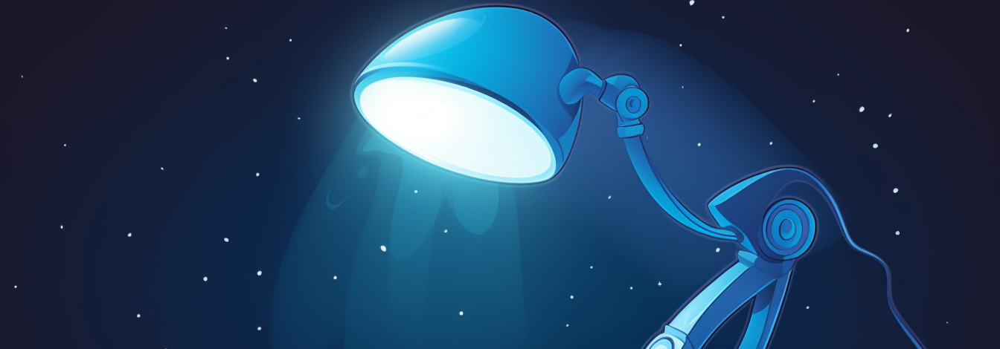

OpenGL Graphics Scene
Animated alien and robot lamp scene showcasing knowledge of Java and OpenGL.
- |
- Java
- OpenGL
3D Renderer, Animation, Lighting, Rasterisation and more...
In this OpenGL project, I've designed a 3D scene for a novel range of alien-animal lamps. The project includes a meticulously built room with diverse elements like walls, a floor, a large window, a table, a dynamic egg-like object, and two unique lamps. Each lamp is capable of mimicking alien creature movements, showcasing my understanding of hierarchical models and lighting effects. The egg, walls, and floors feature texture mapping, contributing to scene realism.Moreover, the window displays an ever-changing outdoor view, enabled by advanced texturing and animation. An interactive camera enhances user experience, letting users manipulate elements like lights and lamp poses. This project epitomizes my proficiency in creating engaging, creative software using graphics API.